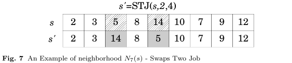

The neighborhood purpose is to swap positions between two jobs j1 and j2.
To perform this process, it is necessary to receive as a parameter the allocations sequence S and the jobs j1 and j2 to be swapped in sequence S. Due to the fact it is possible to generate invalid sequences when jobs related to precedence are swapped, it is necessary to apply the topological ordering on S to sort jobs that are not in the correct sequence.
Figure 7 shows the movement made by this neighborhood. In this example, the method receives as parameter two positions 2 and 4, that represents jobs 5 and 14, so this jobs are swapped.
